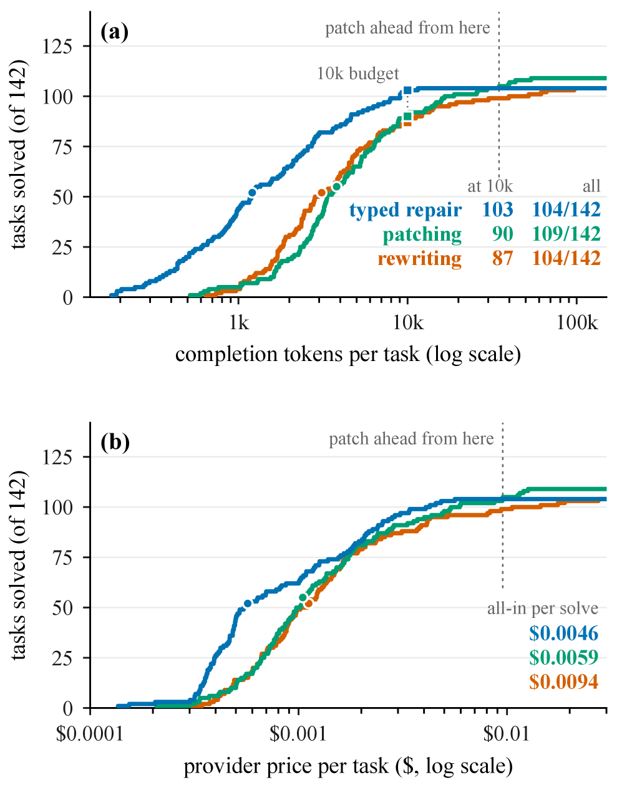

Introduces a schema-checked typed local-edit interface for repairing failed Lean proof blueprints, plus BlueprintTrace, a benchmark of 142 controlled failures.
Abstract
LLM-based Lean proving systems increasingly organize a proof as a blueprint: a dependency graph of formal statements. We introduce BlueprintRepair, a repair interface that lets a model change this graph through ten schema-checked local operations. An operation names the node it edits, so the target theorem cannot be changed. Lean checks every applied change, and an accepted repair must declare every blueprint lemma its proof uses. We also construct BlueprintTrace, a benchmark of 142 controlled failures with complete accepted and rejected repair trajectories. We compare typed edits, exact source patches, and complete module rewrites under matched source, feedback, model, and budget, one episode per state and interface. With DeepSeek-V4-Flash, the three interfaces solve almost the same number of the benchmark's localized failures. Typed repair is the cheapest per solved state (patching is 1.30x as expensive, rewriting 2.06x), and within 10,000 completion tokens per task it reaches almost all of its final coverage, while both free-form interfaces are well behind. A second model, Qwen3.6-Flash, solves fewer states but keeps typed repair cheapest, puts it ahead on the proof-authoring states, and repeats the localized pattern.
Problem
LLM-based Lean proving systems organize proofs as blueprints (dependency graphs of formal statements), and failed blueprints require repair. It is unclear when typed local edits to the graph suffice versus when freer Lean code generation is more useful.
Approach
BlueprintRepair exposes ten schema-checked local operations that edit named nodes in a directed acyclic blueprint graph over a Lean module, preventing target-statement changes. Lean checks every applied change, and an accepted repair must declare every blueprint lemma its compiled proof uses. The authors build BlueprintTrace, a benchmark of 142 controlled failures with full accepted and rejected trajectories, and compare typed edits, exact source patches, and full module rewrites under matched source, feedback, model, and budget.
Results
With DeepSeek-V4-Flash, typed repair solved 104 of 142 states versus 109 for patching and 104 for rewriting, with no pairwise coverage difference clearly nonzero. Typed repair was cheapest per solved state (patching 1.30x, rewriting 2.06x) and reached near-final coverage within a 10,000-token budget. Qwen3.6-Flash solved fewer states but preserved the cost ordering.

Figure 3: Cumulative solved states as the per-task budget increases, for both models. Panels (a) and (c) use completion tokens; panels (b) and (d) use provider price. All four use the same 142 initial states, count solved as in Table 5 , and stop charging a task when it is first solved. The token axes are identical, so the two models’ left-hand panels can be read against each other; the price axes